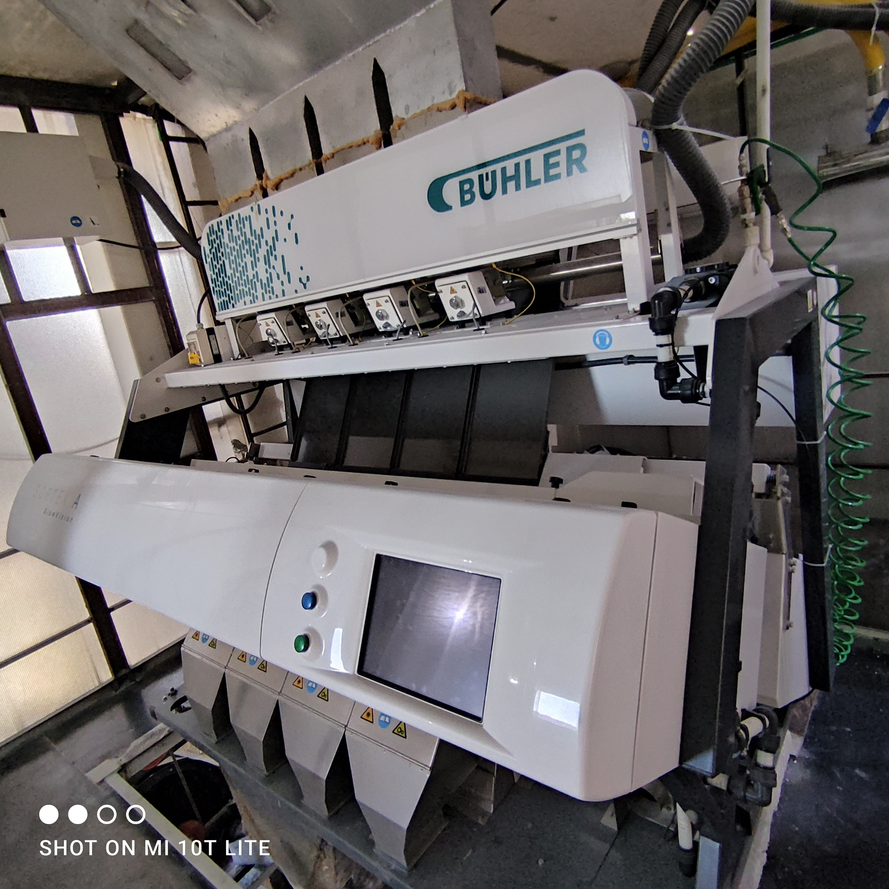
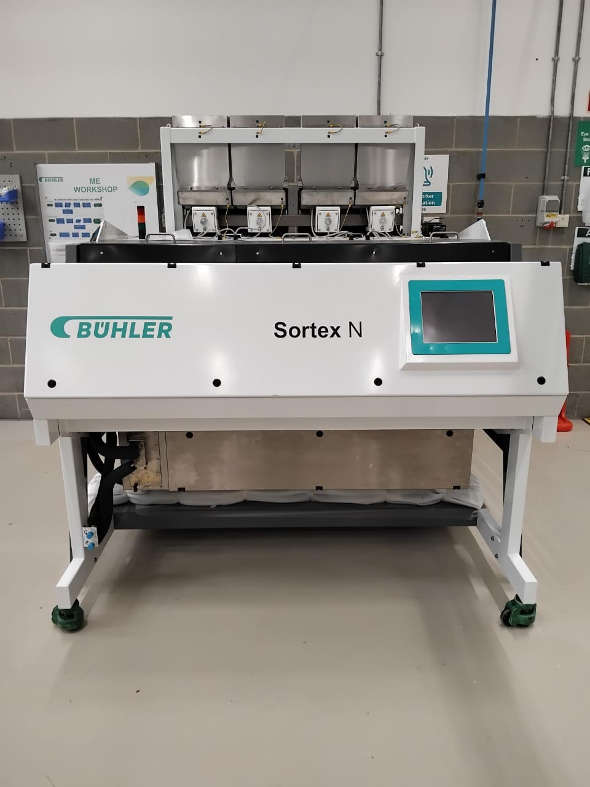

رقائق PET زرقاء
مواد معاد تدويرها عالية الجودة للتطبيقات الصناعية.
إعادة التدوير من أجل غدٍ أفضل
نحول النفايات البلاستيكية إلى مواد معاد تدويرها عالية الجودة للاستخدام الصناعي، مع التركيز على الاستدامة وإمكانية التتبع.
تقوم فريدوم ريسايكلينغ بتحويل النفايات البلاستيكية إلى مواد أولية معاد تدويرها ذات قيمة. نعمل مع التركيز على الجودة والاستدامة والأداء الصناعي والمسؤولية البيئية.
اكتشف المزيد ←
مواد معاد تدويرها عالية الجودة للتطبيقات الصناعية.

بلاستيك PET معاد تدويره عالي الجودة لعمليات التصنيع.

مواد أولية معاد تدويرها موثوقة للاستخدام الصناعي.
 واتساب
واتساب